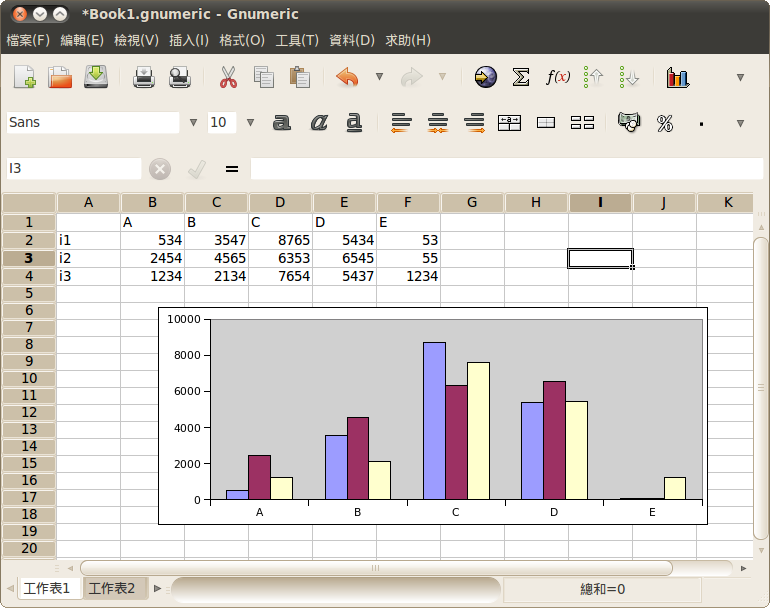
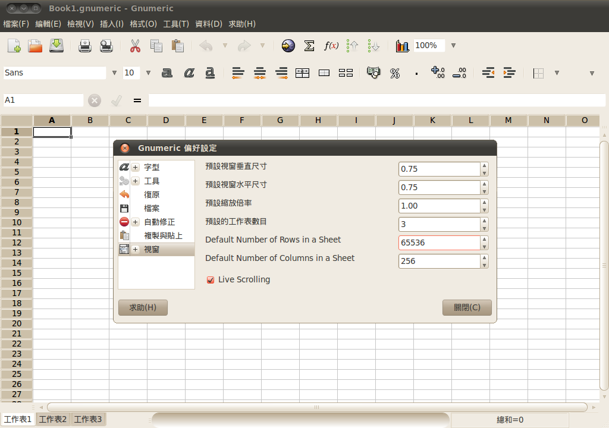
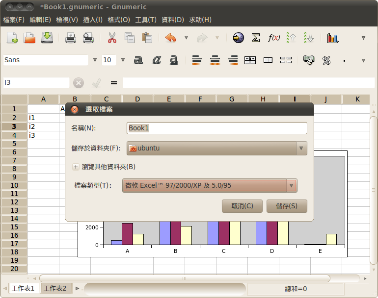
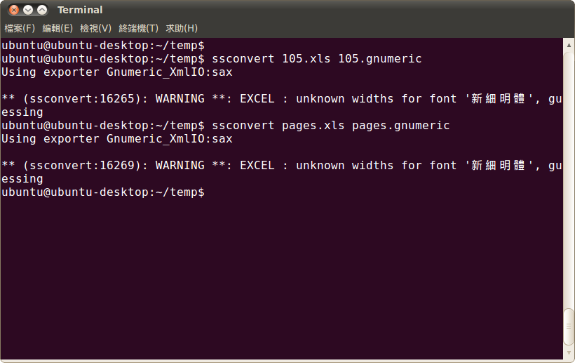
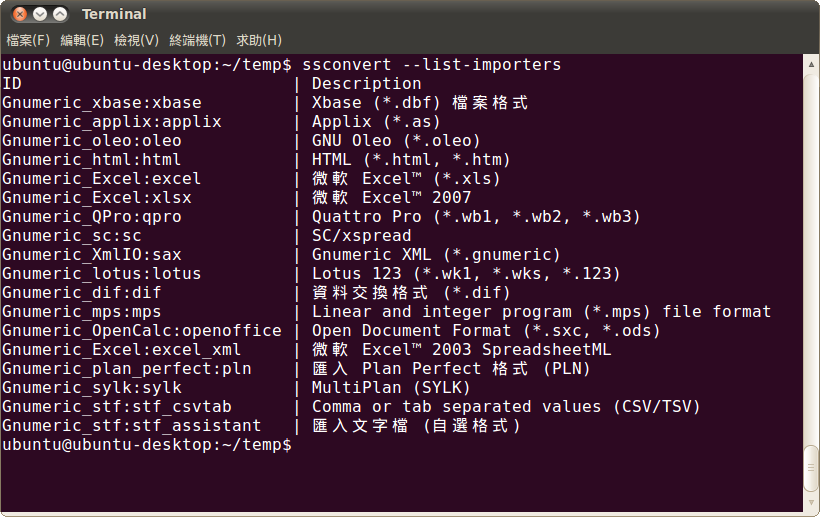
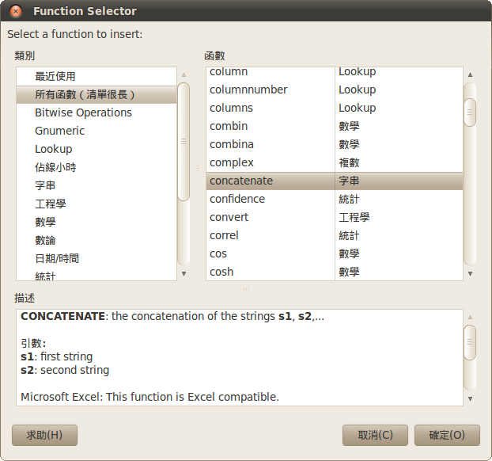
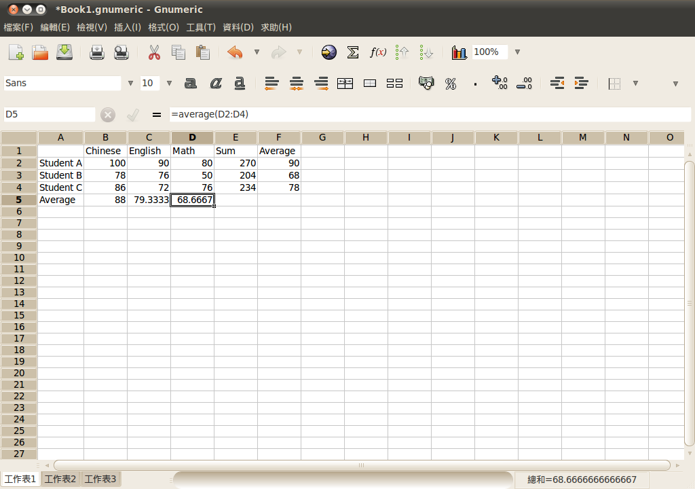
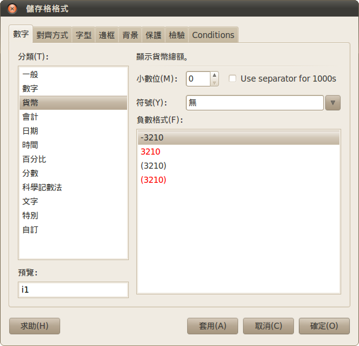
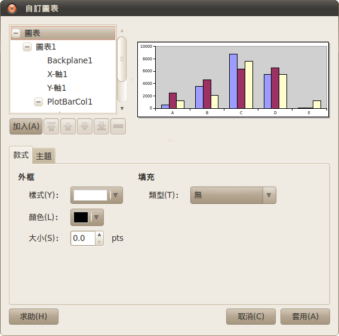

試算表軟體的另一種選擇 - Gnumeric

如果要票選歷史上最重要的十個應用軟體，或許每個人的選擇都各有不同，但相信其中多半都會有試算表之類的軟體名列榜中。從早期的 VisiCalc，一直到 DOS 時代的 Lotus-1-2-3，以及後來的 Microsoft Excel，任何一套試算表軟體都有一定數量的支持者。而無論是要統計數據、製作圖表或是進行收支計算，幾乎只要與數字或表格整理有關係的應用場合，都會看到試算表軟體的出現。
現今市場上佔有率最高的試算表軟體，自然非微軟的 Microsoft Excel 莫屬。雖然就目前的情況看來，想要搶下試算表軟體龍頭寶座的位子有一定的難度，但仍然有不少軟體公司持續加入戰局，並提供自己所研發的試算表軟體。Apple 的 Numbers 是一個例子，IBM 所推出的 IBM Lotus Symphony Spreadsheets 也是另一個範例。而採用開放原始碼方式釋出的試算表軟體也時有所聞，除了 OpenOffice.org 的 Calc 以外，本文所要介紹的 Gnumeric 也是一個相當知名的開放原始碼試算表軟體。
* 軟體名稱：Gnumeric
* 最新版本：1.10.4
* 軟體授權：GNU General Public License (GPLv2)
* 系統支援：GNU/Linux、Windows
* 官方網站：https://projects.gnome.org/gnumeric/
* 備註：Fedora 的使用者可以直接使用「sudo yum install gnumeric」指令安裝，Ubuntu 或是 Debian 的使用者則可以用「sudo apt-get install gnumeric」安裝，而不需要下載原始碼進行編譯。
Gnumeric 事實上是 GNOME 計畫的一部份，也是由 GNOME 的開發團隊進行維護。由於 GNOME 本來就是以建立自由、操作介面良好的桌面環境管理軟體，因此 Gnumeric 也保有與 GNOME 相同的特性。雖然 Gnumeric 是屬於 GNOME 的一份子，但本身並沒有限制只能在 UNIX-like 的作業系統中執行。如果希望在 Windows 系統中使用，Gnumeric 也有提供 Windows 版本的安裝程式。

▲ Gnumeric 的操作畫面
GNOME 開發團隊推出 Gnumeric 的目的也相當簡單：成為世界上最好的試算表軟體！但即使有這樣的宏願存在，Gnumeric 並不打算模仿任何一套現存或曾經存在的試算表軟體，而是希望提出更好的架構與使用者介面，以及更穩定的作業環境。雖然 Gnumeric 並不打算模仿任何軟體，但本身還是可以支援與讀取其他試算表軟體所建立的檔案。
此外，為了讓已經有其他試算表軟體使用經驗的使用者可以快速進行平台轉換，Gnumeric 本身提供了一套可以由使用者自行定義的外觀與操作流程。這些基本的操作介面可能與現有的軟體相當接近，其主要目的是為了讓先前已經有使用其他試算表軟體的使用者，可以在最短的時間內從原有的試算表軟體轉換至 Gnumeric。而若使用者有客製化需求，也能修改操作介面以便符合使用需求。例如以 Microsoft Excel 為例，程式本身限制一個工作表最多只能擁有 65536 列、每一列最多可以有 256 個資料欄；Gnumeric 預設的操作介面也是採用相同的處理模式，也就是每個工作表最多可以處理 65536 x 256 個資料欄位。但只要修改設定值，即可讓每一個工作表支援更多的資料列與資料欄位。預設的操作介面與其他軟體相當接近，以維持使用者的操作習慣，但又提供更加彈性化的功能。

▲ Gnumeric 可以自定操作介面外觀，例如每個工作表的最大處理資料上限即為一例。
主要特色
自由與開放
如果要以最簡單的幾句話描述 Gnumeric 的特色所在，那便是自由、快速，再加上正確性。自由這項特色無庸置疑，本身是以 GNU 通用公共許可證 (GNU GPL) 釋出，原始碼完全開放且無需支付任何費用即可取得。無論是為了研究用途而採用 Gnumeric，或是打算為 Gnumeric 貢獻一份心力，都可以經由 Gnumeric 的原始碼開始進行。開放原始碼的作法不但讓 Gnumeric 可以公開讓全世界的程式設計師進行檢視，以便抓出隱藏其中的程式臭蟲；也能讓使用者建立自定的擴充功能，甚至自行打造出一套全世界獨一無二的試算表軟體。
執行快速
即使不考慮開放原始碼的優點，對於大多數的使用者而言，Gnumeric 的快速處理速度也是讓人津津樂道的一環。由於使用試算表統計數據時，經常會面臨需要處理大量資料的情況，因此試算表軟體本身是否在處理大量資料時仍然保有一定的處理速度，也會是衡量試算表軟體是否堪用的一項依據。Gnumeric 不但可以同時處理大量的數據與資料，也能確保在處理大量資料的同時，軟體本身仍然可以保有一定程度的反應能力。如此一來不會因為軟體本身正在進行大量運算或統計而失去回應能力，甚至讓使用者誤以為程式已經停止運作而直接刪除該程序。除了可以隨時保有反應能力以外，Gnumeric 在處理大量資料時也有相當程度的穩定性，不至於因為處理的資料量較多而造成程式中止執行或產生其他問題。軟體本身有足夠的穩定性，才有能力吸引使用者加以採用。
資料處理正確能力
如果試算表軟體本身只是擁有快速執行能力或是穩定性，但計算出來的數據資料沒有可信度，也是無法讓人信服，如此一來採用試算表軟體的意義便蕩然無存。許多人可能會認為試算表軟體本來就應該要提供正確的輸出資料，但有時候因為程式的臭蟲問題，或是其他開發階段未考慮到的例外情況，都可能造成試算表計算出錯誤的資料，甚至導致更嚴重的問題。Gnumeric 本身在正確性方面有相當良好的信譽，無論是內建的函式或是工具，都能確保計算出來的數據是正確無誤的。事實上由 Computational Statistics & Data Analysis Statistical Software Newsletter (CSDA SSN) 所提出的報告指出，Gnumeric 擁有相當正確的資料處理能力，其正確性甚至高於試算表軟體的領導品牌。
支援的檔案格式
雖然採用 Gnumeric 有許多好處，但不可諱言的是，世界上仍然有許多人只會使用少數幾套試算表軟體。如果要處理這些軟體所產生的檔案，勢必要讓 Gnumeric 支援眾多軟體彼此不同的檔案格式。而 Gnumeric 所支援的檔案格式，則會視使用者所進行的動作是匯入檔案或輸出檔案而有所不同。 匯入檔案指的是使用 Gnumeric 開啟其他試算表軟體所儲存的檔案，輸出檔案自然是指採用 Gnumeric 處理過資料後，將完成結果存檔的動作。

▲ 無論是匯入或輸出檔案，Gnumeric 都支援許多不同的格式。
Gnumeric 在匯入檔案方面支援 XML、Microsoft Excel、HTML、CSV、Lotus 1-2-3、Quattro Pro 以及 OpenOffice.org 的 sxc 格式。其中 XML 檔即為 Gnumeric 所使用的檔案格式，命名為 .gnm 或 .gnumeric，本身是 XML 格式再加上 gzip 壓縮而產生的檔案。而在 Microsoft Excel 方面，由於微軟在每一個版本的 MS-Office 之中都會對檔案格式進行些許修改，在這樣前後版本彼此不相容的情況下，甚至連 Microsoft Excel 都曾出現過新版軟體所儲存的檔案無法在舊版軟體開啟的問題，因此其他非 MS-Office 的軟體能否存取所有的 MS-Office 檔案，通常會讓人有些許懷疑存在。Gnumeric 本身可以支援 Microsoft Excel 5、95、97、2000、XP、2007 等各種版本所儲存的檔案，只不過如同眾人所預期的，Gnumeric 雖然可以讀取 Microsoft Excel 的檔案，但通常遇到表單或圖表較為複雜的情況之下，便無法完整的在 Gnumeric 之中重現該檔案。畢竟 Microsoft Excel 採用的是私有格式，其他軟體一般而言也無法真正達到完全相容的情況。
而在輸出檔案方面，Gnumeric 支援的格式包含 XML（即 .gnumeric 或 .gnm 檔案）、Microsoft Excel、HTML、LaTex、PDF、CSV 等格式。在 Microsoft Excel 方面與匯入檔案相同，支援的版本從 Microsoft Excel 5、95 一直到 XP 與 2007 版本。而在 HTML 方面，可以支援的格式為 HTML 3.2 或是 HTML 4 的版本，XHTML 亦有支援。目前雖然尚未看到可以支援 HTML 5，但相信未來的版本應會納入支援格式之中。
Gnumeric 另外還有提供一個批次處理的功能，可以將大量的檔案從某種格式轉換成另一種格式。在需要大量匯入資料時，批次處理功能會是相當良好的輔助工具。這個批次處理功能是透過一個名為 ssconvert 的工具程式進行，在安裝 Gnumeric 時會自動安裝此工具程式。此程式可以自動處理檔案格式的轉換，處理過程完全不需要使用者的介入。

▲ Gnumeric 提供 ssconvert 工具程式，作為自動轉換檔案格式的工具。
事實上 ssconvert 並非真正的批次處理程式，相反的 ssconvert 每次只能處理一個檔案的轉換工作。但要解決這樣的問題其實一點都不困難，只要寫個 Shell Script，便能以批次方式進行大量檔案的轉換工作。
至於 ssconvert 所能支援的檔案格式，基本上便是 Gnumeric 所能支援的所有檔案格式，無論輸入檔案或是輸出檔案皆同。但 Postscript 與 PDF 格式則是其中的二個例外，因為這二種檔案格式需要利用列印系統進行，無法直接使用 ssconvert 進行轉換。然而這樣的小問題，事實上並不影響 ssconvert 搭配 Gnumeric 所帶來的便利性。
由於 Gnumeric 所能支援的檔案格式可能會因為版本的更新而有所改變，因此 ssconvert 的支援能力也在不斷地變化當中。如果不確定所要進行轉換的檔案格式是否可以被 ssconvert 支援，可以直接使用「--list-importers」或是「--list-exporters」這二個參數進行查詢。前者會列出 ssconvert 所支援的所有輸入格式，後者則是可支援的所有輸出格式。

▲ ssconvert 所支援的輸入或輸出檔案格式，視 Gnumeric 的版本與其所支援的格式而定。
Gnumeric 的相容性
雖然 Gnumeric 本身並不打算取代任何現有的試算表軟體，只是單純的想要提供更好的使用選擇。但無法否認的是，如果想要吸引更多的使用者，勢必仍要充份支援其他試算表軟體所獨有的功能。
Gnumeric 本身幾乎已經包含了 Microsoft Excel 北美版的所有工作表功能，這讓已經習慣使用 Microsoft Excel 的使用者，可以在幾乎沒有學習困難度的情況下轉移至 Gnumeric。雖然現有的 Gnumeric 版本仍然無法支援 Microsoft Excel 樞紐分析表與條件格式化的功能。但目前這二項功能的支援已經被列入研發計畫之中，並準備在未來的版本中推出。但反過來說，Gnumeric 本身也提供了一些 Microsoft Excel 並未支援的函式，其數量高達一百五十幾種。這樣看來，市場上的主流軟體是否在功能表現上亦最為強大，其實也在未定之數。

▲ Gnumeric 所支援的函式也相當豐富。
使用 Gnumeric 所提供的函式相當容易，其操作方式也與目前大多數的試算表軟體相同，可以從選單開啟函式清單，再選擇欲使用的函式；如果對於要使用的函式名稱相當熟悉，也能直接輸入等號，再輸入函式名稱與要處理的資料欄範圍，即可直接套用該函式。

▲ 使用 Gnumeric 的函式功能時，其操作方式與其他試算表軟體類似。
儲存格格式與圖表
儲存格格式關係到資料可以如何呈現，對於試算表軟體而言是相當重要的一環。Gnumeric 本身支援包含數字、貨幣、會計、日期、時間、文字等各種不同的資料格式，支援的格式與處理方式與 Microsoft Excel 十分接近。而在儲存格的處理上，Gnumeric 也支援邊框、儲存格顏色（包含背景與前景）、字型更換、水平對齊與垂直對齊，以及儲存格合併、擴展、自動換行等功能。

▲ 儲存格可以處理的資料類別相當多元化
使用試算表軟體，經常需要將原始資料輸入後，轉成圖表以便可以快速找到隱藏在資料之中的意義。Gnumeric 可以支援多達 16 種不同的圖表類型，其中包括基本的圓餅圖、環型圖、長條圖等圖表格式，另外像是 X-Y 分佈圖、雷達圖、泡泡圖等進階的圖表格式，也都在支援之列。不但涵蓋了大多數圖表類型與格式，在操作上也相對簡單許多。在建立或編輯圖表時，其他試算表軟體採用的是較複雜的處理方式，使用者需要在圖片中點選所需要編輯的元素名稱，才能進行編輯，但 Gnumeric 會將圖片中所有元素放在一個視窗中顯示，使用者可以相當清楚的知道該如何處理這些圖片元素，以便產生自己所需要的圖表內容。

▲ 圖表在編輯時會列出所有元素。
其他功能
除了上述討論過的功能以外，Gnumeric 還有許多在資料處理與分析方面的功能可以使用。例如分析相關的功能中，提供了進階的統計分析功能，也提供了亂數產生器或是線性與非線性的解決方法。使用者可以自行定義資料範圍名稱或是函式名稱，也能在不同的工作表之中建立關聯性。至於小計功能、放大縮小的觀看方式或是自動填入、自動過濾等各種細部操作，也在支援的功能項目之列。
結語
Gnumeric 所支援的功能之多，其實很難在一篇文章之中完整描述。如果想要了解這套軟體可以如何在工作之中輔助自己的資料匯整與統計作業，最好的方法就是立即安裝，實際操作演練一番，相信會有更多的體會。或許在操作時很難不拿 Gnumeric 與 Microsoft Excel 互相比較，也許使用者也會對二者之間的檔案相容性產生一些疑問。但只要導入 Gnumeric 進行長期使用之後，相信就能逐漸擺脫 Microsoft Excel 的束縛，改以 Gnumeric 為主要的試算表軟體。
◎ 作者簡介
翁卓立，逢甲大學資訊工程學系畢業，現為台灣科技大學電子所在職專班學生。目前擔任韌體研發工作，主要使用 Embedded Linux 進行產品開發。著有「Linux 進化特區：Ubuntu 9.04 從入門到精通」等書。